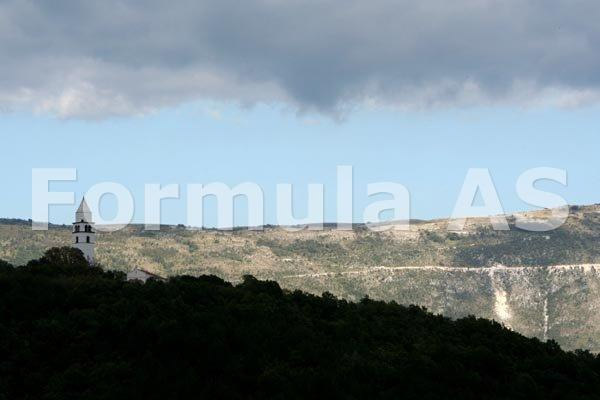
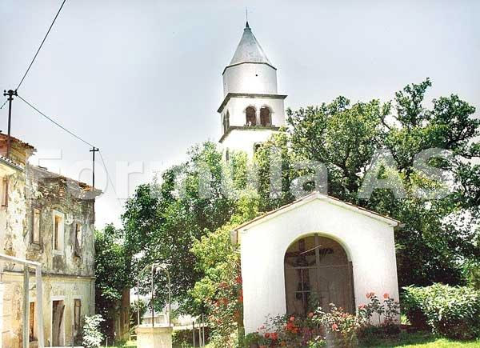
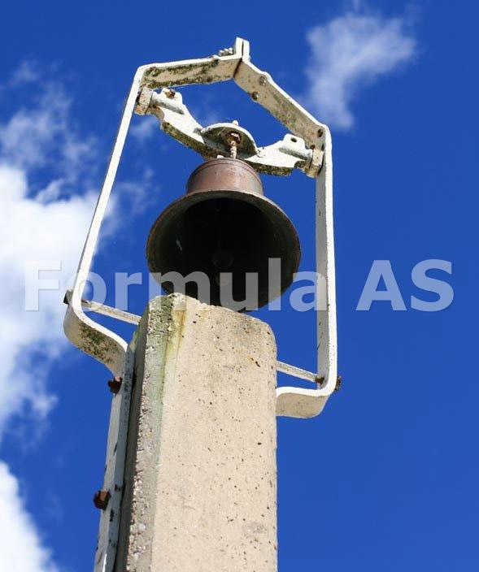
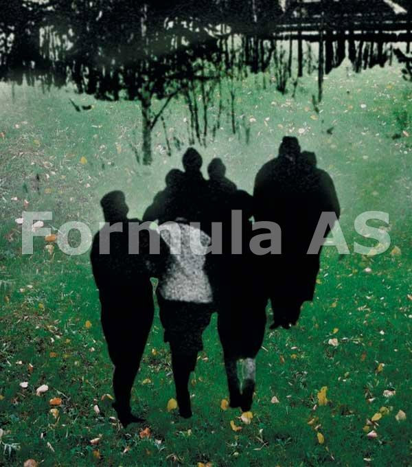
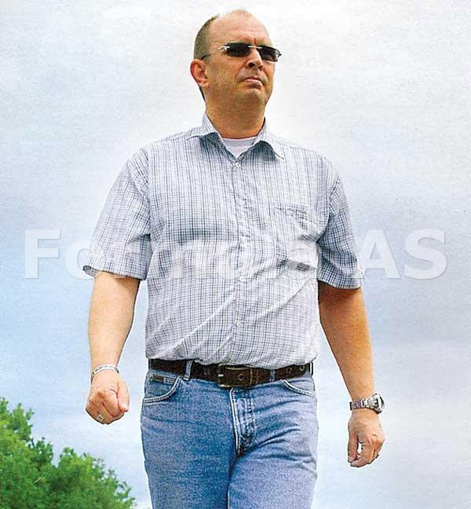
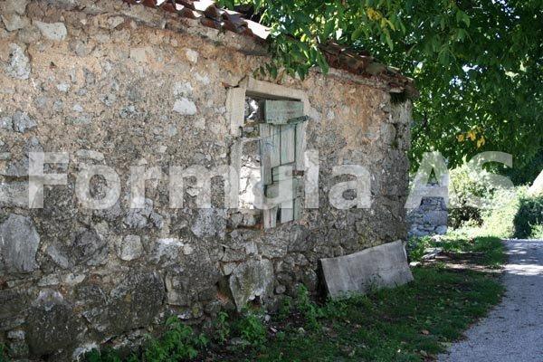
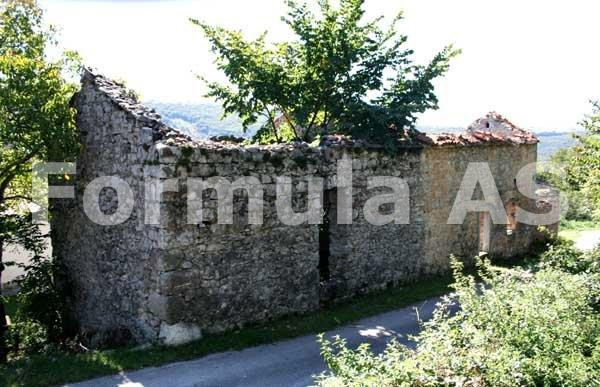
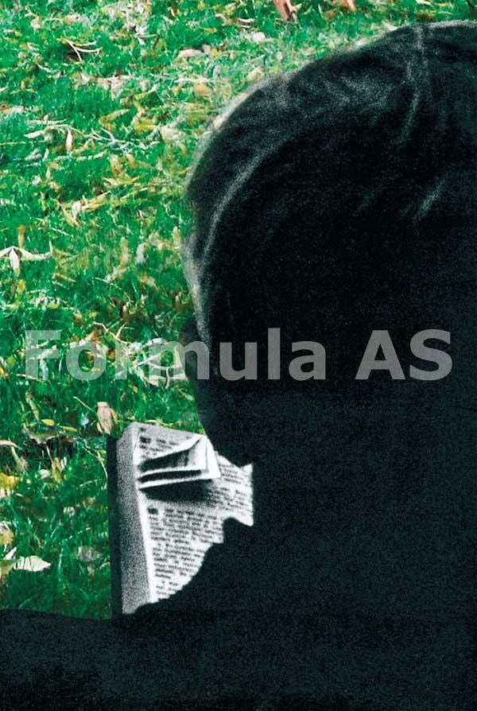
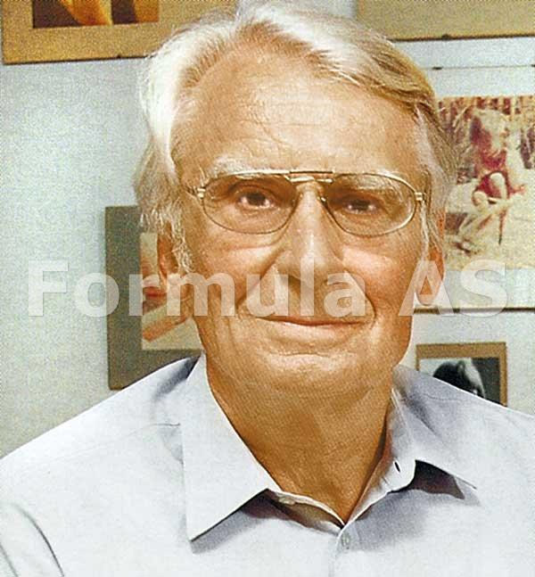
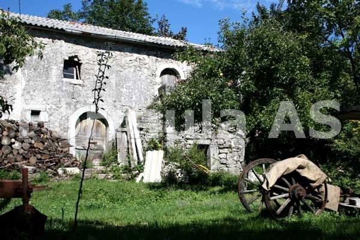

Reportajul de față a fost scris după cea de-a doua călătorie a revistei "Formula As" în Croația. Era pe la mijlocul lui septembrie, când începe să vină toamna.
 Turnul clopotniței se ridică exact pe vârful dealului: alb, uriaș, cu acoperișul înfipt în cerul neliniștit. Clopotele sunt acționate mecanic și când bat reverberează asurzitor peste pustiul care se întinde împrejur: hățișuri sălbatice, o biserică zăvorâtă și câteva case abandonate, năpădite de iederă. Nici o șoaptă. Doar vântul sărat care bate dinspre Adriatică șuieră subțire, prevestind toamna care va veni. Sunt în Brdo, satul umbrelor, din care n-au mai rămas decât ruinele de piatră masivă ale câtorva case bântuite de șoapte; satul ai cărui locuitori au plecat în cer sau în lumea cea larga și în care mai trăiește un singur om: Iolanda. Bătrâna și bolnava Iolanda... Ultima.
Și totuși... biserica pare în bună rânduială, albă, curată, frumoasă, cimitirul are flori proaspete pe morminte, ca și cum un personaj nevăzut ar avea grijă de toate acestea. Bag de seamă apoi o pisică portocalie, încremenită sub stejarul uriaș de lângă turnul clopotniței, și florile așezate în fața unei troițe ce adăpostește un Crist trist și îndurerat.
Sunt lângă troiță. Pisica portocalie privește fix, nemișcată. Cristos este răstignit în spatele unui grilaj. În clipa în care clopotul marelui turn începe să bată, ridic privirile și o văd pe Iolanda în fața casei, cu un șal albastru înfășurându-i umerii. Stă în ușa și mă privește, fără să spună nici un cuvânt, fără să facă nici un gest. Mă apropii de ea și-o salut. "Bura zi," îi spun, așa cum știu că se spune în limba istro-română, în vlåșchi, "bună ziua". Bătrâna dă din cap și schițează un zâmbet obosit, degetele ei strâng șalul de lână, căci bătrânei Iolanda îi este frig de la vânt și de la singurătate și de la timpul care trece peste vârful măgurii părăsite a satului său. "Capela," îi spun, "am venit la capela," acolo de unde va pleca bătrânul Iosip în ultima să călătorie. Dă din cap. "Nu veritu-a nime," zice, și privește peste dealuri, în depărtare, acolo unde se văd răspândite cele câteva sate ale acestor oameni care-și spun vlåșchi. "Dar o să vina, așa-i?" "Da, da, veri-vor," da ea din cap, ca și cum ar face-o cu ultimele puteri. Pisica portocalie s-a apropiat și acum a încremenit din nou, la câțiva metri de noi. Bătrâna Iolanda vorbește cu mine în româneasca aceasta ciudată, cu sunet străvechi, eu înțeleg numai unele cuvinte și ascult așa, fără să spun nimic, "batir," "ceru," "seliștea," "mortu". și din cuvintele acestea puține se încheagă dintr-o dată toată tragedia acestui loc.
 Privirea mea se lărgește, îmi dau seama că această ultimă casă ce mai are sticlă în ferestre și niște perdele de stambă este deja la fel de părăsită ca toate celelalte, că pustietatea stă la pândă gata să atace acest ultim bastion al cărei păzitor este bătrâna Iolanda și focul din soba ei. Singura casă din coșul căreia mai iese un fir de fum. "Ce io știu?," se întreabă bătrâna, ridicând din umeri, privind în sus, la norii care aleargă pe lângă crucea din vârful turnului, venind dinspre mare. "Plânsu-am după tot bătâru dus, de joală" zice. Adică de jale. Apoi, înainte de a se fereca în tăcere, îmi arată cu degetul unde este capela pe care o caut, locul din care va pleca pentru totdeauna Iosip, încă unul dintre ultimii bătrâni ai acestor locuri. O privesc pe Iolanda încremenită în cadrul ușii, ruinele caselor de piatră care se apleacă strângându-se în jurul ei, pisica portocalie refugiată din fața singurătății în aceasta mică piațetă pustie, în care niciodată nu se va mai auzi murmurul mulțimii, și înțeleg, dintr-o dată, că venisem la înmormântarea unui om, dar voi asista, de fapt, la funeraliile unei lumi; pentru că fiecare bătrân istro-român care dispare lasă în urmă încă o casă goală, care se va transforma curând într-o ruină de piatră, privind cu ferestrele către marele turn.
Cortegiul
 Capela este micuță, din piatră tencuită. Un singur clopot, minuscul, atârnă deasupra. În spate se vede Muntele Mare, pe crestele căruia, cândva, umblau turmele acestor sate de ciobani rătăciți. Deocamdată sunt singur, deși mai este doar un sfert de oră până la ora înmormantării. Iosip, bătrânul care a murit, este înlăuntru, cu cineva din familie. Nu îndrăznesc să intru. Rămân afară. De jur împrejur, pe dealuri și în vale, pe sub Muntele Mare, cotropite de vegetație, se zăresc satele vlåșchilor, cărora ei le spun seliște, și care sunt de fapt niște cătune minuscule, alcătuite din numai câteva case. Brdo, dealul pe care mă aflu, este locul cel mai înalt, iar marele turn al clopotniței poate fi văzut de pretutindeni. Cândva, silueta să albă era centrul acestei comunitati răspândite pe dealuri, iar clopotul cu sunet adânc le amintea acestor oameni cine sunt.
Astăzi, clopotul bate pentru nimeni. Dealul Brdo este ultima destinație, capătul drumului. Toți cei care mor în satele dimprejur sunt îngropați în cimitirul de pe colina de lângă casa Iolandei, în umbra marelui turn.
 Mai întâi apare o mașină elegantă, apoi încă una și încă una. În 15 minute, mica alee care duce de la capelă la cimitir s-a umplut cu mașini. Din ele coboară bărbați înalți și tăcuți, femei elegante care se strâng în liniște în jurul sicriului. Cerul e boltit deasupra, iar pe sub el bate vântul dinspre mare. Majoritatea lor sunt veniți în vacanță, ca în fiecare an, la casele lor vechi din Croația. Sunt veniți din America, din Canada, din Italia, din Australia, de pretutindeni. S-au strâns 50-60 de oameni. Toți se cunosc între ei. Schimbă mici semne și uneori vorbesc în șoapte care sună românește. Apare preotul. Sunt catolici. Slujba durează 5 minute. Clopotul capelei sună spart în vânt. Și apoi, cu preotul în frunte, cortegiul trece prin fața caselor dărâmate, din care izbucnesc tulpinile lemnoase ale iederilor gigantice, prin fața treptelor care au fost cândva monumentale, prin fața micii piațete și a troiței de piatră din care veghează Cristosul cu fața tristă ascuns în spatele unui grilaj. Bătrâna Iolanda e tot acolo, în dreptul ușii, cu mâinile strângând șalul de lână albastră pe umeri, cu ochii mijiți, cu pisică portocalie lângă ea. Scena pare ireală, ca și cum am fi într-un film. Și exact în clipa în care cortegiul trece pe sub marele turn, clopotul bate o singură dată, enorm, reverberând în ruinele caselor parasite. Este ora 4 și treizeci de minute fix, într-o după-amiază de duminică, în septembrie. Dacă ne-am ridica deasupra cortegiului, am vedea cum acesta seamănă cu un șarpe de oameni, făcând o buclă pe drumul ce înconjoară clopotnița. Dacă ne-am ridica și mai mult, am vedea clopotnița ca pe un punct alb și petele gri ale ruinelor strângându-se împrejurul ei, ca și cum s-ar teme și ele de moarte. Iar dacă am privi din cer, atunci n-am vedea decât câteva puncte pierdute printre copaci, satele pe cale de dispariție ale istro-românilor din Croația, în umbra marelui lor munte, de pe malul Adriaticei.
Claudio lu Carlinti
 "This is Draga," zice Claudio într-o engleză americană puțin cam scrâșnită, aceasta este Draga, satul în care el locuiește timp de o lună pe an, atunci când vine de la New York. "And this is my homeland," adaugă cu mândrie, cu un gest larg, arătând de jur împrejur. Patria lui Claudio. Privesc, și patria e făcuta din trei case mari și late, din care două sunt aproape prăbușite, iar cea de-a treia, casa lui Claudio, pare a fi într-o veșnică reparație.
Asta și face Claudio, atunci când vine din America: repară casa în care s-a născut și care aparține familiei lui, de generații întregi. E o construcție făcuta din pietre enorme, ca o cetate medievală, cu ferestre mici și zăbrelite, ca și cum stră-străbunicul lui Claudio, pe care îl chema Carlo, ar fi știut că trebuie să supraviețuiască timpului. "Cåsa Carlinti," repeta Claudio zâmbind larg. Aici, la vlåșchi, fiecare casa are un nume, o poreclă ce vine din timpuri imemoriale, de acum sute de ani, când strămoșii au venit aici de undeva. Pe el în cheamă Claudio Sudicici, dar toată lumea îi spune Claudio lu Carlinti, pentru că așa se numește casa. Tatăl sau era Carlo lu Carlinti, bunicul era tot Carlo lu Carlinti, iar străbunicul tot Carlo lu Carlinti. Pe toți barbatii din familia asta i-a chemat Carlo, numai pe el îl cheamă altfel. Claudio e mic de statură, îndesat și puternic, poartă ochelari de soare înguști Armani și arată exact ca un șofer de taxi din New York. L-am cunoscut la Brdo, unde venise și el să participe la înmormântarea bătrânului Iosip, deși nu-l cunoștea decât din vedere, deși locuia în alt sat, deși... "Am mai rămas puțini," spune el în engleză lui stranie, amestecată cu străvechi cuvinte românești, "în fiecare sat mai sunt doar câțiva de-ai noștri, vlåșchi. Unele sate au rămas goale, parasite de tot, nu mai e nimeni pe dealuri, numai pădurea care crește peste case." Satul lui, Draga, care nu apare pe nici o hartă, a avut cinci case cu totul. Din toate, numai a lui, Casa Carlinti, mai e vie, deși nu mai arde nici un foc în ea. Casa Poldari a murit, casa Iadrina a murit, casa Papalin a murit... "Cum adică nu mai arde nici un foc în ea?," întreb, în timp ce Claudio îmi arată fântâna cu ghizduri de piatră sculptată pe care a săpat-o, cu mâinile lui, stră-străbunicul Carlo. "The fire was never ending," zice Claudio pe gânduri, focul nu se stingea niciodată într-o casă, focul era sufletul casei, "the soul of the house," și atâta vreme cât ardea focul, casa era vie. Așa era tradiția în țara din care au venit bătrânii lui. "Claudio," zic către el, iar el deschide larg ușile de lemn străvechi ca să-mi arate interiorul, "Claudio, de unde au venit bătării tăi? Din ce țară, Claudio?" Mă privește o clipă atent, apoi spune: din Italia, din Friuli. Carlo da Friuli, așa îi mai spunea bătrânului care a pus piatra de temelie a casei Carlinti și care era cioban. Claudio rostește cuvântul "cioban" cu dezinvoltură. Cioban, adică păstor, aveau animale multe, oi, vaci, cai, pământuri, toată valea asta era a vlåșchilor pe-atunci. "Cioban se spune și românește," zic, iar Claudio zâmbește larg. Știe. știe că au o legătură cu "rumunschi," că limba lor, vlåșchi, e un fel de românească, pentru că are colegi români la serviciu, la New York, pe care el îi înțelege ce vorbesc, dar ei nu prea îl înțeleg pe el. Uite, zice: plângua irima pentru cåsa betâra, îmi plânge inima pentru bătrâna casă. Apoi îmi arată ușa din lemn vechi: leamne! Arată cu mâna în sus, spre tavan: steale, adică stele, ceru, lura, adică luna. Îmi arată cu degetul locul în care ar fi trebuit să ardă focul, sufletul casei Carlinti, åtra, zice, agnistea lu focu ce a fost făcută cu så mâra de nonu... Înțeleg. Vatra a fost făcută de bunicul sau, cu mâna lui. Privesc de jur împrejur, suntem în adâncul casei de piatră, vatra, o laviță străveche, un cuptor ca cele de pe la noi, de la țară, o icoană înnegrita de timp, polițele de stejar vechi de 200 de ani, un ceaun. O casă de ciobani de la munte. Și-apoi, amintirea aceasta tulbure a focului care n-ar fi trebuit să se stingă niciodată, la fel cum încă se crede la stânile din Carpați. Claudio ghicește la ce mă gândesc și-mi spune că da, este o legendă, așa se spune, așa a auzit și el, că neamul acesta al vlåșchilor s-ar trage din munți, de undeva din Carpați, că limba vlåșchi seamănă perfect cu româna, numai că el nu știe dacă e adevărat. De unde să știe? Înainte să ajungă în America, n-a văzut în viata lui un român.
 Suntem afară, așezați pe o piatră uriașa ce a făcut cândva parte din temelia unei case. De jur împrejur se văd dealurile, iar la câțiva kilometri, izbucnind din desișuri spre cer, marea turlă a clopotniței din Brdo. "Uite," zice Claudio, "acolo a fost un sat, acolo altul, acolo altul, acolo a fost o fermă mare. Acum nu mai e nimic. Only bushes, numai hățișuri care au năpădit totul. Toată valea a fost vlåșchii, acum nu mai știm ce e, au venit italieni, dalmați, croați, au cumpărat pământul, în vreme ce noi, vlåșchii, ne-am răspândit prin lume. La New York sunt mai mulți vlåșchi decât în toată Istria." "Claudio lu Carlinti da Friuli," zic, "ai copii?" El se întristează puțin în spatele ochelarilor Armani. Nu, n-are copii, dar sora lui, care trăiește la New York, are, și vorbesc în vlåschi, iar el, Claudio, le povestește despre patria lor aflată peste ocean. Copiii n-au fost niciodată în Istria, dar se întâlnesc mereu cu alți copii care vorbesc aceeași limbă și atunci când se întâlnesc, bătrânii îi învață să cânte și să danseze ca vlåșchii. Uite-așa. Și Claudio se ridică în picioare pe platforma de piatră din fața casei, ridică mâinile și începe să cânte un ritm ciudat, ce pare foarte vechi, un fel de horă aspră, sălbatică, se rotește, bate din picioare, hăulește de unul singur, fără cuvinte, ca un războinic de acum o mie de ani. Cântecul se lovește de zidurile de piatră ale Casei Carlinti, pentru ca apoi să se împrăștie, ca un fum, peste dealuri.
Romilda lu Ciobania
Soarele bate în diagonală, iar atunci când străbat norii, razele sale taie aerul în felii strălucitoare. Romilda stă în genunchi, pe iarba, aplecată, iar mâinile sale mișună cu o grijă infinită. Are o lopățică minusculă, ca acelea cu care se joacă copiii în nisip, și cu ea sapă un șănțulet abia vizibil printre ierburi, rotund. Apoi, dintr-o sticlă, toarnă acolo puțină apă, iar apa înconjoară ca un râu în miniatură o mica insulă verde. Pe aceasta insulă, dacă privești atent, poți vedea niște flori minuscule, galbene, portocalii și roșii, care cresc din ierburile sărăcăcioase, iar ea, Romilda, le privește ca pe un miracol.
 E o femeie în vârstă dar încă frumoasă, cu mâini fine, cu trăsături aspru decupate în lumina de septembrie, cu parul alb. În spate, pe iarbă, este pusă un fel de rulotă, o caravană ce n-a mai fost mișcată din loc de foarte mult timp și ale cărei roți s-au scufundat în pământ până la jumătate. La ferestrele rulotei sunt tot flori și perdeluțe cusute de mână, strânse cu șnururi de mătase roșie. Un drum îngust șerpuiește pe lângă pajiștea verde și dacă am privi puțin împrejur am vedea că toate acestea sunt la marginea unui sătuc, la intrarea căruia, pe o placardă scorojită de vreme, scrie Kostircani. Puțin mai încolo, se află o casă adevărata, casa verilor Romildei, care locuiesc în America, numai că ei îi place să stea aici, în caravana aceasta, printre florile ei și printre arbuști. Ea locuiește de fapt în Italia, la Trieste, are un apartament în centrul orașului, dar în fiecare vară vine aici, la Kostircani, în locurile unde s-a născut ea acum 64 de ani, și de care, cu cât trece timpul, se simte din ce în ce mai legată, ca și cum inima ei s-ar întoarce din ce în ce mai mult acasă, căutându-si rădăcinile. "Mereu am fost cu gândul acasă," zice într-o engleză americană amestecată cu italiană și cu cuvinte românești, privindu-mă direct în ochi. "Am străbătut lumea în lung și în lat, am locuit în Indonezia și în Filipine, am fost profesoară de italiană la Singapore, am lucrat în New York, la Manhattan Chase Bank, am străbătut Africa și India, dar mereu, de când mă știu, am visat să mă întorc acasă. Și veneam, la ani de zile, stăteam o săptămână și plecam din nou, și în fiecare an pădurea era mai mare și mai mare peste casa noastră, o vedeam cum moare. Acum vreo 50 de ani, au dispărut ferestrele, apoi acoperișul s-a prăbușit, apoi au început să crească iederile înlăuntru, au împresurat-o desișurile, drumul până la ea se astupa din ce în ce mai mult, până când a mai rămas doar o cărare. Am crezut mereu că o să mă întorc și o să repar casa, până într-o zi, când mi-am dat seama că sunt prea bătrână ca să mai fac ceva pentru Ciobania, că nu mai am putere, că a trecut prea mult timp peste noi și că am stat prea mult timp despărțite. Mi-am dat seama că nu-mi mai rămâne de făcut decât să stau cu ea până în ultima clipă, a mea sau a ei."
Romilda zâmbește cu o seninătate strălucitoare, dincolo de orice vârstă, cu lopățica în mână, cu eșarfa în culorile verii înconjurându-i gâtul. Ce nume ciudat are casa în care s-a născut Romilda, mă mir, Ciobania! Da, casele, ca și oamenii, au un nume, o viață, un destin, uite, casa Faraguna mai trăiește, au cumpărat-o niște italieni, casa Scrobe s-a dus, casa Bardar s-a dus, Cuncici s-a dus, aproape toate s-au dus, iar Ciobania supraviețuiește numai pentru că ea, Romilda, vine aici în fiecare vară, stă uneori o lună, alteori două, alteori trei. "Vrei s-o vezi?," mă întreabă. Vreau. Romilda este și ea vlåșchi, neam de ciobani veniți cândva din niște munți îndepărtați, da-da, așa știe ea din bătrânii care-au fost, așa e povestea, poate că din Carpați, cum se spune, poate de cine știe de unde, ce mai contează, istoria s-a pierdut și-acum sunt cu toții croați. Mergem pe o cărare aproape sufocată de tufișuri, ea are un băț în mână cu care dă crengile la o parte. Coborâm câteva sute de metri într-o vale sălbatică, năpădită de desișuri. Pe-aici ea se plimba când era copilă, cu verii ei, cărarea era pe-atunci un drum pietruit, din care acum nu se mai vede nimic, ea simțea de pe-atunci sălbăticia crescând din pământ și cuprinzând lumea, dar verii ei nu simțeau nimic, nothing, niente, presimțea sfârșitul așa cum e acum, dar nu știa să spună ce simte. Acum știe. "This is the end," acesta este sfârșitul unei lumi, al lumii vechi. "You know, young man, știi tinere, țara asta, care a fost a noastră, a trecut pe sub francezi, pe sub austrieci, pe sub italieni, pe sub sârbi, pentru ca acum să fie Croația și noi să fim... What are we, who are we, ce mai suntem, cine mai suntem noi? Nu mai suntem nimeni, nobody, nimeni, dust în the wind, praf în vânt, asta suntem noi. Vlåșchi, nu mai exista vlåșchi, prea multe crime au fost făcute, prea multa frică s-a strâns." Tac. Înțeleg. Suntem într-o țară care, doar acum câțiva ani, se află încă în război.
 "Take a look". Privește, zice ea în engleză, arătând cu bățul înainte. Dintre tufișuri se înalță ruinele casei Ciobania, din piatră grea. Trunchiuri de iederă enorme ies dintre ziduri. Copaci mari cresc prin acoperiș. Casa a fost făcută acum 180 de ani, de un strămoș al mamei sale, care se chema Jacob, și când ea era copilă, acolo erau grajdurile, iar acolo era un cuptor în care mama ei făcea pâine, acolo era fântâna și aici o poartă mare din lemn masiv și din piatră. Iar acum nu mai e nimic, nimic. Romilda rămâne așa, cu bățul în mână, privind. Nu, nu e tristă, nu îi e frică, nu-i pare râu de nimic. Așa trebuia să fie. Destinul. Casele, satele, neamurile se nasc, trăiesc și mor. Așa e și cu vlåșchii. Asta a fost viața lor. Ieri a plecat Posidel Iosip, care era mai mare ca ea. Mâine va pleca altul. Dar ei, Romildei, nu-i e frica deloc. Nu e nici măcar tristă. "I thank to God every morning when I wake up for being alive," zice ea, privind la ruine dintre tufișuri. "Îi mulțumesc în fiecare dimineață, atunci când mă trezesc, lui Dumnezeu, pentru că sunt în viață, apoi mă duc la florile mele sălbatice. Știi, îmi plac florile sălbatice mai mult decât trandafirii, do you understand that?" Înțelegi?
Lina și Prodan
 Sunt într-o curte frumoasă, înconjurata cu ziduri vechi, de piatră, și acoperită cu o boltă de viță. Mănânc șerbet de gutui și beau apă de fântână. În dreapta mea este doamna Lina, care a fost învățătoare și care are gesturi elegante și discrete în timp ce vorbește în vlåșchi.
În stânga este șotul ei Prodan, care a fost carosier la uzinele Fiat, un adevărat artist, pasionat de sculptură și astronomie. Sunt în vârstă. Sunt frumoși. Ei nu au plecat nicăieri. Vor rămâne aici până la sfârșit, oricare ar fi acesta. Casa lor e frumoasa, îngrijită, o adevărată insulă colorata printre ruine. Iosip Posidel, bătrânul care a fost înmormântat ieri, a fost vecinul lor. Acum casa lui va rămâne goală, pentru că nu are decât o fată și aceea locuiește departe, la Opatija, nu se va mai întoarce niciodată acasă, nici măcar nu mai vorbește vlåșchi, știe numai croată. Au auzit-o ieri, la înmormântare. Casa Stipan, deci, se va duce și ea. în zece ani, când poate nici ei nu vor mai fi, nu va mai rămâne nimic. Vlåșchii vor dispărea de pe fața pământului. Adică... vor mai fi pe undeva, prin America, prin Canada, dar nu aici. Aici s-a terminat. Finito. Cu doar 50 de ani în urma, vlåșchii aveau pământuri întinse, pășuni, păduri, animale, erau bogați și respectați, Muntele Mare era al lor, toată valea era a lor, satele erau ale lor. Apoi a venit ultimul război și i-a împrăștiat, apoi au venit comuniștii și ei au fugit care încotro a putut. Unii au plecat în Italia, unde aveau rude, alții undeva, oriunde. Țara e pustie. Au rămas bătrânii și bătrânii se duc unul cate unul. "România? Ce e cu România?" Da, au venit uneori români, dar mai mult pe coastă, la Adriatica, la hotel, și au vorbit românește, bela lingua, molto vecchia, gănesc la fel ca noi, adică vorbesc, cuvinta ca noi, dar noi, uite, la țimiteru mergem, la funeralia, iar a noștri feciori mersi sunt în America. Din curtea lor, ca din oricare altă curte de pe aceste dealuri, se vede clopotnița din Brdo, care le aduce aminte, cu bătăile ei de clopot ca o numărătoare inversă, că a mai trecut o zi, că a mai plecat unul dintre ei, că a mai rămas încă o casă pradă iederilor.
 N-am mai mâncat șerbet din copilărie. Are același gust cu șerbetul pe care îl făcea bunica mea. Bolta de viță, florile colorate de pe ziduri, toate acestea îmi sunt familiare. Lina și Prodan au în mână revista în care a apărut unul din primele reportaje despre istro-români. Pe coperta sunt zvonciarii. Bătrânii silabisesc cu greu cuvintele românești și se bucură de fiecare dată când reușesc să înțeleagă vreunul. O populație pe cale de dispariție. Mai sunt doar câteva sute de oameni. Dintre care o treime poate erau ieri pe dealul Brdo. Sunt printre ultimii martori ai unei lumi care dispare în tăcere, fără strigate, fără proteste, o lume privegheată în ultimele sale clipe, numai de marele turn al clopotniței albe. Nu știu dacă putem face ceva pentru ei, dacă mai exista vreo șansă, dacă... Poate ca Romilda avea dreptate. Ca și oamenii, casele, satele, limbile omenești și neamurile trăiesc și mor. Poate că nu e nimic trist în asta.
Horia Țurcanu
Foto: Andrei Cheran, Bogdana Tihon
November 12, 2007
© 2007 Formula As